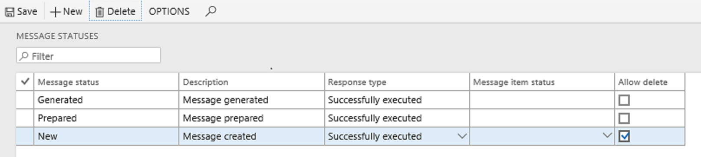

Set up and run processing to call a simple exporting ER format to generate an Excel report
[!include[banner](../includes/banner.md)]After you've created your ER format, mapped it to data sources, and completed it, you can run it from the Electronic reporting workspace. After the report is generated, you can save it locally.
To control the following aspects of the reporting process, set up electronic message processing:
- Log information about who generated the report.
- Log information about when the report was generated.
- Save the reports that were generated for previous periods.
The following example shows how you can set up electronic messaging to generate a report that is based on an exporting ER format for Microsoft Excel. If you want to follow this example, the exporting ER format for Excel must already be created, mapped to data sources, and completed. Additionally, a number sequence must already be set up for electronic messages.
When you build processing, it's helpful if you first define the processing actions and statuses that will be set up. The following illustration shows the processing for this example.

Create message statuses
Go to Tax > Setup > Electronic messages > Message statuses.
Create the following message statuses:
- New
- Prepared
- Generated

On the line for the New status, select the Allow delete checkbox to let users delete messages that have this status.
Create additional fields
- Go to Tax > Setup > Electronic messages > Additional fields.
- Add an additional field and its values.
- Set the User edit option to Yes to let users edit the field.

Create message processing actions
For this example, you will create the following message processing actions:
- Create message
- Update to Prepared
- Generate report
- Update to initial status (optional)
Follow these steps to create the actions.
Go to Tax > Setup > Electronic messages > Message processing actions.
Create an action that is named Create message. On the General FastTab, in the Action type field, select Create message.
Create an action that is named Update to Prepared, and set the following fields:
- On the General FastTab, in the Action type field, select Message level user processing.
- On the Initial statuses FastTab, in the Message status field, select New.
- On the Result statuses FastTab, in the Message status field, select Prepared. In the Response type field, enter Successfully executed.
Create an action that is named Generate report, and set the following fields:
- On the General FastTab, in the Action type field, select Electronic reporting export. In the Format mapping field, select the exporting ER format. The options are Excel, XML, JSON, Text, and Other.
- On the Initial statuses FastTab, in the Message status field, select Prepared.
- On the Result statuses FastTab, in the Message status field, select Generated. In the Response type field, enter Successfully executed.
Optional: To let users regenerate a report several times, create an action that is named Update to initial status, and set the following fields:
- On the General FastTab, in the Action type field, select Message level user processing.
- On the Initial statuses FastTab, in the Message status field, select Generated.
- On the Result statuses FastTab, add a separate line for each of the two message statuses (Prepared and New). For both lines, set the Response type field to Successfully executed.
Electronic message processing
For this example, all the actions should be set up so that they run separately. The assumption is that the user will initialize every action.
Go to Tax > Setup > Electronic messages > Electronic message processing.
Add a record for your processing, and add all previously defined actions and an additional field.
Optional: On the Security roles FastTab, define security roles for your processing to limit access to specific reporting.
Go to Tax > Inquiries and reports > Electronic messages > Electronic messages.
Select New to create a message. At this point, you can add dates and a description. You can also update the value of the additional field as you require.

The grid on the Action log FastTab is automatically filled in with a log of all actions that are performed on the message.
You can now delete or update the message status.
To update the message status, select Update status. In the New status field, select Prepared, and then select OK.

The message status is updated to Prepared.
Generate the report by selecting Generate report.
The report is generated, and the message status and action log are updated.
To view the generated report, select the Attachment button (paper clip symbol) in the upper-right corner of the page.
Submit your requests to the Documentation Team